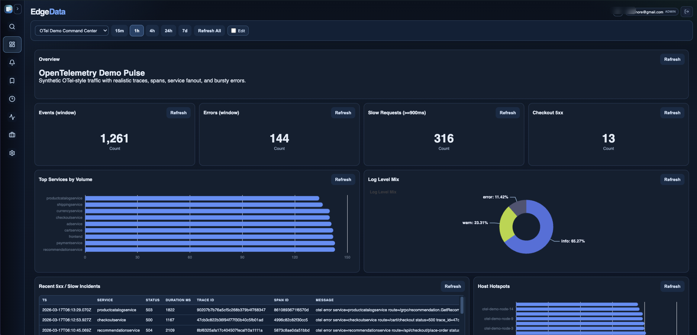
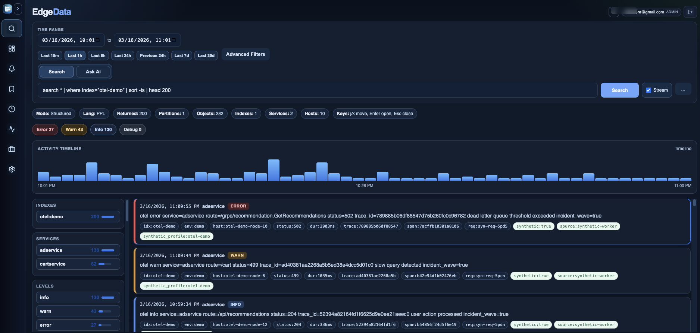
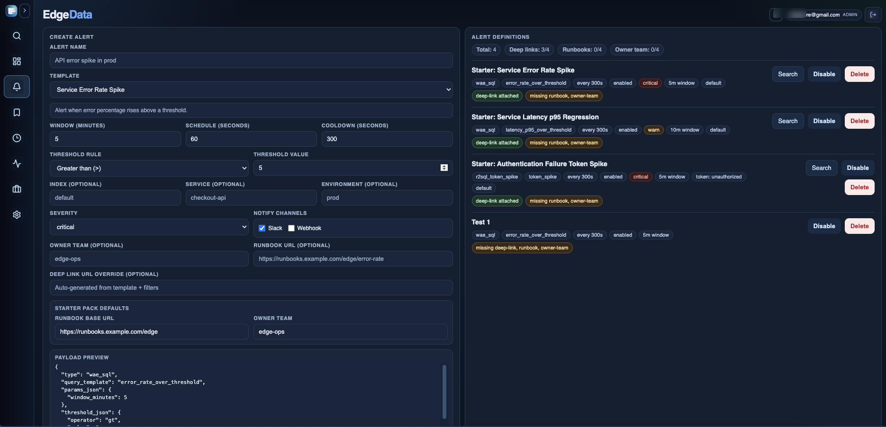
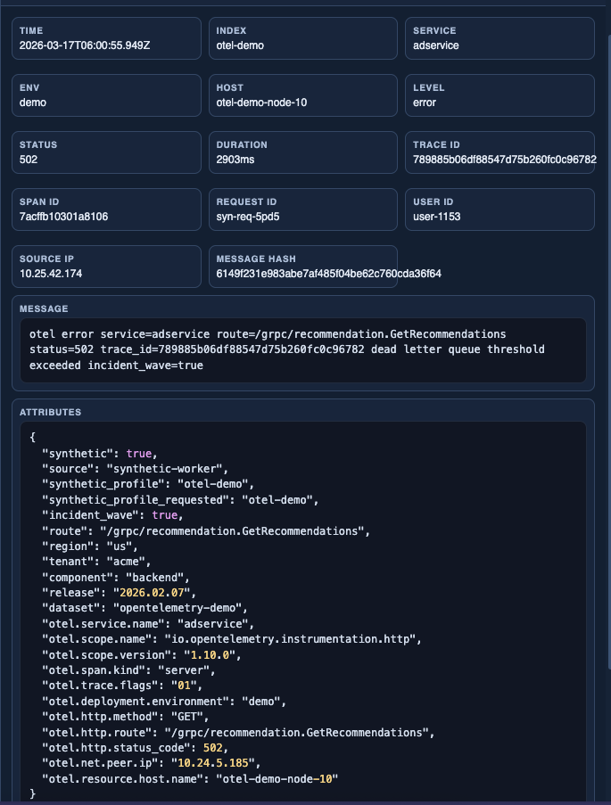
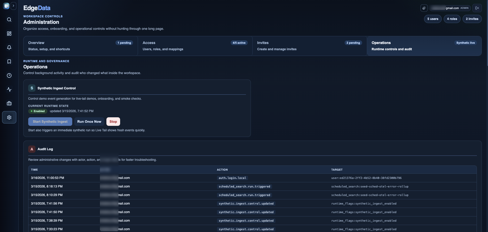

Deep search that stays explainable
Move between token search, phrase scans, filters, and pivots without losing the investigation trail.
EdgeData is built for teams that already run on Cloudflare and want a focused way to move from signal to root cause without stitching together half a dozen tools during an incident.
Single-tenant deployment model on Cloudflare Pages, Workers, D1, R2, and Analytics Engine.
search "origin timeout" | where service="checkout-api" and env="prod"
timechart span=5m count() by level
checkout-api · prod · last 15m
Bounded phrase scan ready
EdgeData keeps the operational path tight: collect edge and app signals, summarize them clearly, alert with context, and pivot into the exact event trail that explains what changed.
Move between token search, phrase scans, filters, and pivots without losing the investigation trail.
Use a readable pipeline language for investigations so searches, filters, stats, and pivots stay transparent to operators.
Expose error spikes, latency regressions, hotspots, and service fanout in a view built for operators.
Keep thresholds, schedules, runbook metadata, and deep-link conventions attached to each operational alert.
Deploy into your own Cloudflare account so data control, security boundaries, and spend stay local.
EdgeData uses PPL because incident response benefits from a query language that is expressive enough for real investigations but still readable when alerts, dashboards, and saved searches need to be shared across a team.
EdgeData brings together operational dashboards, PPL-powered log search, alert definition workflows, rich event inspection, and workspace administration as one connected investigation surface.





EdgeData is built around the Cloudflare stack so teams can ingest logs, search with PPL, define alerts, and investigate incidents using primitives that already fit how their edge and application infrastructure runs.
Workers handle ingestion and query execution while object-backed indexes keep deep search durable and explainable.
D1 stores saved searches, alerts, preferences, and operational state so teams can move from detection to action quickly.
R2 and Analytics Engine support recent visibility, raw retention, and drilldown paths without turning EdgeData into a generic analytics project.
EdgeData is actively evolving, and we're looking for blunt product feedback from engineers, operators, and teams running on Cloudflare. The form is short and goes straight to our team.
2-minute form. Great for early feedback, feature requests, and design-partner interest.